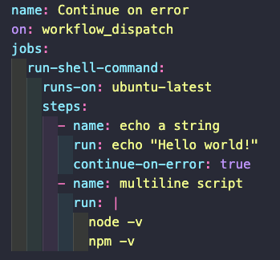

The if: failure() option was good to force a downstream step to run even if the previous one had failed. But any step coming after that immediate failed one, will still not run. If we need to make sure that all downstream steps do run, we can add the continue-on-error: true key:value pair to the job that might fail. By default this key's value is set to false.
